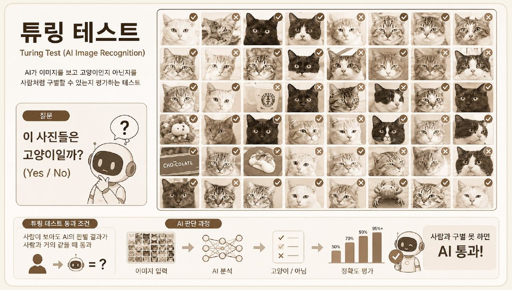
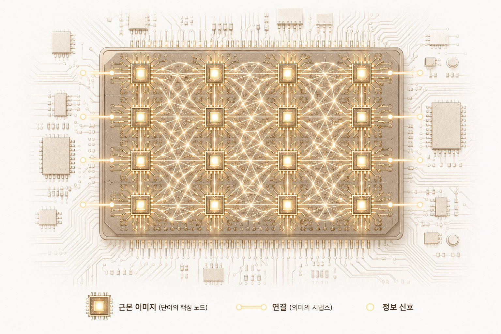
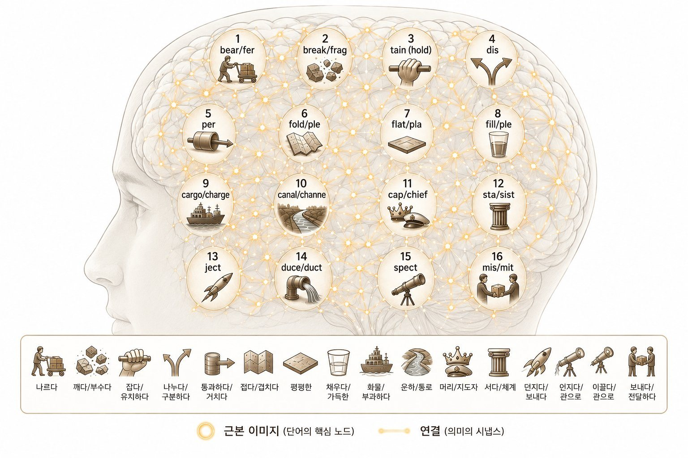
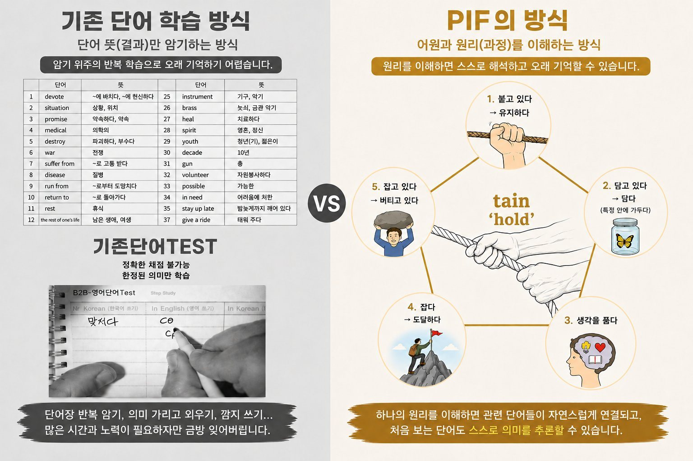
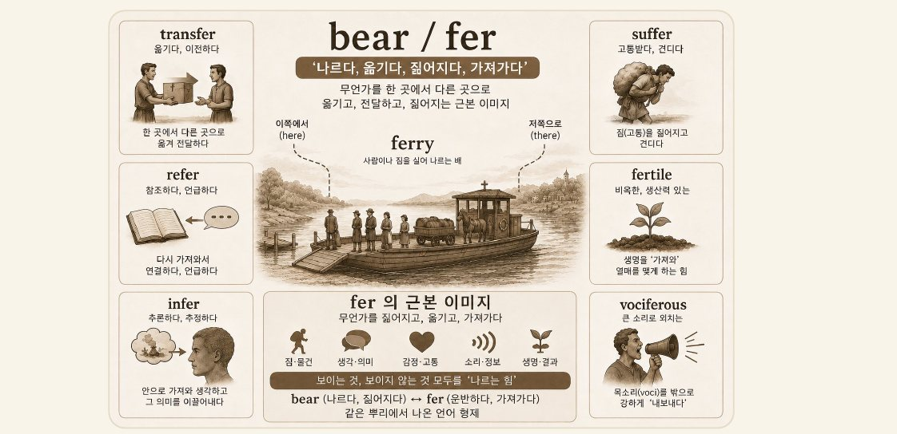

오랫동안 AI에게 고양이를 인식시키는 방법은 '규칙과 설명'이었습니다. 사람이 고양이의 특징을 하나하나 코드로 적어 넣는 방식이었죠.
- 귀가 뾰족하면 고양이
- 수염과 털이 있으면 고양이
- 네 발이면 고양이……
하지만 현실의 고양이는 무한히 다양합니다. 앉아 있는 고양이, 반쯤 가려진 고양이, 만화체로 그린 고양이. 그 모든 경우를 규칙으로 정리하는 일은 사실상 불가능했습니다.
'고양이를 알아본다'는 이 단순해 보이는 문제는 AI가 60년 넘게 풀지 못한 난제였습니다. 1990년대까지만 해도 많은 연구자들은 규칙과 설명을 아무리 추가해도 인간 수준의 사물 인식은 불가능하다고 여겼습니다.

인간의 뇌에는 고양이에 대한 '완벽한 설명서'가 들어 있지 않습니다. 대신 수많은 단순한 신경세포(노드)와 그 사이의 연결(시냅스)이 있고, 경험을 통해 연결의 강도(가중치)가 끊임없이 조정됩니다.
우리는 그렇게 세상을 이해하고, 처음 보는 상황 앞에서도 스스로 판단합니다. 규칙을 암기해서가 아니라, 연결망을 가지고 있기 때문입니다.
전환점은 딥러닝이었습니다. 제프리 힌튼은 신경망을 다시 일으켜 세웠고(역전파의 대중화)1, 2012년 그가 연 딥러닝 시대가 모든 것을 바꿔놓았습니다.
같은 해, 한 인공신경망이 라벨도 정답도 없이 수백만 장의 영상을 그저 '보기만' 했습니다. 그러자 놀랍게도, 누구도 가르치지 않은 '고양이를 감지하는 부분'이 그 신경망 안에 스스로 생겨났습니다.

아무도 "귀가 뾰족하면 고양이"라고 말해주지 않았습니다. AI는 스스로 가중치를 조정하며, 사람도 말로 다 설명하지 못하는 '고양이다움'이라는 추상적 특징을 내부에 만들어낸 것입니다.
60년 동안 규칙으로 풀지 못한 문제를, '연결'과 '추상화'가 풀어냈습니다.
1 역전파(Backpropagation) : AI가 틀린 결과를 통해 스스로 연결망을 수정하며 학습하는 방식. 예를 들어 고양이 사진을 보고 '개'라고 잘못 판단하면, 오차를 계산해 연결 강도(가중치)를 수정하고 다음에는 더 정확하게 고양이를 인식하도록 학습한다.
"귀가 뾰족하면 고양이"는 깨지기 쉬운 규칙입니다. 조건 하나만 어긋나도 무너집니다. 반면 신경망이 만든 '고양이다움'은 규칙이 아니라, 관련된 것들이 그 주위로 모여드는 의미의 중심점에 가깝습니다. 처음 보는 고양이도 그 중심 근처에 자리를 잡을 수 있기에, 일반화가 됩니다.
규칙은 적용하다 멈추지만, 중심점은 확장됩니다.
이 차이가 학습의 본질을 가릅니다.
저희 PIF영어는, 한국의 영어 교육이 아직 1990년대의 AI와 닮아 있다고 봅니다. 단어를 낱개로 외우고, 문법을 규칙으로 암기합니다. 시험 전날 외운 문장은 기억하지만, 처음 보는 문장 앞에서는 그대로 멈춰 섭니다.
규칙 기반 학습은 상황이 조금만 달라져도 무너지기 때문입니다. 서랍에 없는 단어는, 끝내 꺼낼 수가 없습니다.
그래서 저희는 단어를 하나씩 따로 외우게 하지 않습니다. 대신 언어 속 핵심 이미지와 의미의 연결 구조를 심습니다. 보카트리는 이런 핵심 어근들을 머릿속의 노드로 먼저 세웁니다.

외우는 학습에서,
이해하는 학습으로

fer라는 뿌리는 '나르다, 옮기다, 가져가다'라는 하나의 핵심 노드입니다. 이 노드 하나가 심기면, 그 위로 단어들이 가지처럼 연결됩니다.

이 학생은 처음 보는 vociferous도 'voci(소리) + fer(나르다) → 소리를 내보내는'으로 스스로 추론합니다. 머릿속에 단어 목록이 아니라, 하나의 의미 네트워크가 자라기 때문입니다.
이것은 단어를 따로따로 외우는 방식이 아닙니다. 하나의 원리를 이해하면 여러 단어가 연결됩니다. 처음 보는 단어도 스스로 의미를 추론할 수 있게 됩니다.
무작정 외우지 않습니다,
꺼내 쓰며 단단해집니다.
스스로 학습하고, 3단계 테스트로 어원 노드를 강화
신경망의 연결이 훈련으로 단단해지듯, 머릿속 어원 이미지도 꺼내 쓸 때 강해집니다. 보카트리 앱은 스스로 학습한 뒤, 3단계 인출 테스트로 그 핵심 노드 이미지를 단단히 굳힙니다.
신경망에서도 노드를 둔다고 연결이 저절로 강해지지는 않습니다. 연결은 반복된 노출, 즉 훈련을 통해 단단해집니다. 학생도 마찬가지입니다. 어근(노드)을 심는 것은 좋은 출발점을 만드는 일이고, 그 연결이 살아 움직이게 하려면 실제 문장과 지문 속에서의 반복이 필요합니다.
그래서 저희는 '노드만 깔면 끝'이라고 말하지 않습니다. 노드를 깔면, 그 다음의 모든 학습이 폭발적으로 효율적이 된다고 말합니다.